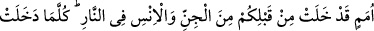
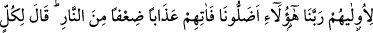

CEHENNEM EHLİ VE
BİRBİRİYLE MÜNAKAŞALARI
36. Âyetlerimizi yalanlayanlar ve büyüklenip onlardan yüz çevirenler var ya, işte
onlar ateş ehlidir. Onlar orada ebedî kalacaklardır.
37. Allah’a iftira eden ya da O’nun ayetlerini yalanlayandan daha zalim kimdir!
Onların kitaptaki nasipleri kendilerine erişecektir. Sonunda elçilerimiz (melekler)
gelip canlarını alırken “Allah’ı bırakıp da tapmakta olduğunuz tanrılar nerede?”
derler. (Onlar da) “Bizden sıvışıp gittiler” derler. Ve kâfir olduklarına dair kendi
aleyhlerine şahitlik ederler.
38. Allah buyuracak ki: “Sizden önce geçmiş cin ve insan toplulukları arasında siz
de ateşe girin!” Her ümmet girdikçe yoldaşlarına lânet edecekler. Hepsi birbiri
ardından orada (cehennemde) toplanınca, sonrakiler öncekiler için, “Ey Rabbimiz!
Bizi işte bunlar saptırdılar! Onun için onlara ateşten bir kat daha fazla azap ver!”
diyecekler. Allah da: Zaten herkes için bir kat daha fazla azap vardır, fakat siz
bilmezsiniz, diyecektir.